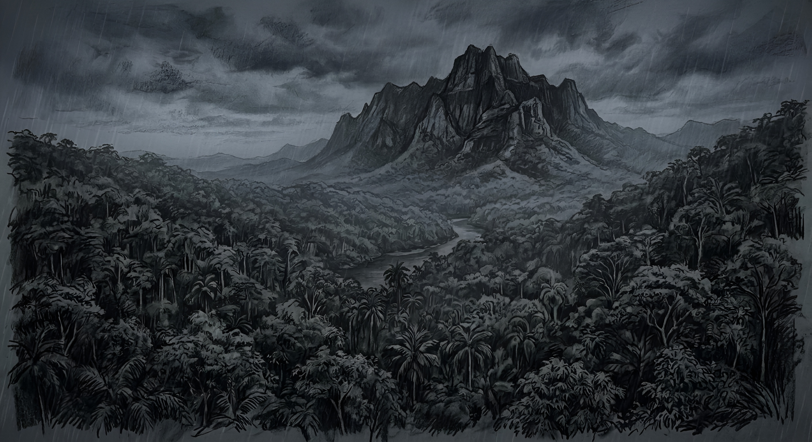

BEYOND THE RIDGE

It was a cold, foggy Sunday morning. The rain had finally let up, and the smell of chicken soup drifted in from the kitchen.
The television was on in the living room, more for noise than anything else. My dad has always liked it that way. He says it makes the house feel less empty.
I sank into the couch and stared at the screen absentmindedly. I wasn’t really watching until the anchor’s voice sharpened.
A passenger plane has reportedly gone down in the northern highlands. Search teams are being dispatched. Weather conditions are poor. The signal has been lost somewhere near the old forest range.
They showed a satellite image of the mountain. Even blurred through studio graphics, I recognized the ridgeline immediately.
My stomach dropped.
I haven’t heard its name spoken on the news in years.
The mountain has a reputation, whispered about in neighboring villages. In the early 1990s, a small plane went down somewhere in its forested basin, roughly thirty-seven kilometers north of my hometown.
It had been on its way to the provincial capital when it lost contact over a sparsely populated stretch of dense, forested highlands. On board was a small group of officials and staff.
Initial radar readings suggested a sudden and dramatic loss of altitude, consistent with a possible impact in remote terrain. There had been no distress call. No final transmission.
The first search teams went in soon after. None of them returned. The wreckage, the people, everything, vanished as if swallowed by the earth itself.
There had been more attempts after that, each team more cautious than the last. None came back either.
The government eventually offered an explanation: the plane, and probably the missing searchers as well, had been claimed by the forest.
The forest was a trap, a maze of hidden marshes, sudden flash floods, and unstable slopes ready to slide at the slightest rain. The dense canopy made aerial searches useless; the forest swallowed sound and light alike. It was the kind of place a person could walk into and never walk out.
Only a few months after the last rescue team vanished, another was being assembled. Not to locate the plane this time, but to find the missing searchers themselves.
The mission was simple in theory: retrace the steps of those who had vanished, follow the signs they left behind, and bring back whatever traces of them we could find.
My cousin Anton, called that rainy afternoon and asked me to join the search. I’d camped in the forest around the mountain before, and he figured I knew the terrain.
I hesitated. I had never been part of a search-and-rescue operation before. Still, I told him yes.
The team was a motley mix: a handful of uniformed rescue officers, seasoned volunteers who’d been on minor missions before, and locals, like me, who knew the areas better.
Together, twenty of us stood ready, small enough to move quickly, but enough to cover the treacherous slopes and deep valleys that had claimed previous searchers.
Sensing my unease, my cousin clapped a hand on my shoulder.
“Relax,” he said. “We don’t need miracles. Just more eyes and boots on the ground. With terrain this rough, every able-bodied person counts.”
“I’ll do my best,” I said, still unsure.
“Just stick with your group and follow instructions. You’ll be fine.”
A tall, burly man approached us from across the clearing.
Anton stepped forward and shook his hand.
“Kemal. This is my cousin,” he said, turning slightly and gesturing toward me. “He’ll be joining your team. Knows the southern part of the mountain well. Figured he could help you with navigation and ground searches.”
Kemal looked me over for a moment, assessing. I nodded and shook his hand.
“Nice to meet you, cousin.” His voice was calm and friendly. I noticed a faint accent when he spoke.
“Kemal’s leading the ground unit,” Anton explained. “You’ll be moving on foot through the southern sector. Arman and Rian will take to the choppers once the weather clears enough for a proper aerial search.”
“Those lucky bastards.” Kemal let out a short breath that might have been a laugh. “Must be nice, flying over all this instead of crawling through it.”
Anton smiled faintly. “Somebody has to do the crawling.”
He checked his watch and took one last drag from his cigarette before flicking it away. Then he turned to me.
“If you’ve got questions, ask Kemal. He’s been through this kind of thing more times than he’d like.”
“Ever seen a dead body before?” Kemal asked me suddenly, flashing a grin.
I hesitated. “Uh… kind of.”
Anton shook his head.
Kemal raised his hands in mock surrender, still smiling.
“I’m just saying. Better he hears it now than freezes up later. He should know what we’re dealing with here.”
“Don’t listen to him,” Anton said to me, checking his watch again. “All right. I should head out now.”
“See you tomorrow, boss?” Kemal asked.
“Probably not,” Anton replied. “Got a few other things to deal with.” He paused, then nodded toward me. “Hey, Kemal, keep an eye on this kid for me, all right?”
Kemal shrugged, the corner of his mouth lifting slightly.
“Relax. I’ll treat him like a princess.”
“You be careful, all right?” Anton said, fixing me with a firm look. “Do your best out there. Help these guys. I’m counting on you.”
The weight of his words settled in my chest, and suddenly the situation felt far more serious than it had a moment ago.
As Anton walked away, the forest seemed to close in around us again. The drizzle thickened, tapping softly against leaves and gear.
Kemal gathered us inside a bigger tent. A laminated map was spread across a folding table, its corners weighted down with spare batteries and a radio handset.
I edged closer, watching as he traced lines across the map with a thick finger, outlining sectors and ridgelines I recognized from years of hiking the area.
“We’re combing the southern edge first,” he said, tapping the map twice. “We move slow. Stay in visual range. Call in anything that looks off. Even if you’re not sure. And no one wanders.”
“There’s a small river up ahead,” I said, pointing to an unmarked stretch of the map. “It winds through the valley along the base of the eastern cliffs. If we follow it north, the cliffs gradually level out into marshland there. It’ll bring us closer to the last known coordinates before the flight lost contact.”
“Good job, kid,” he said, giving my shoulder a solid pat.
“There’s an open grass field near the western edge of the mountain, though,” someone added. “About four kilometers northwest of the river.”
Kemal studied the map carefully, tracing the ridges with his finger.
“We need eyes on both sides,” he said quietly. “Hasan, take some men and comb the western edge. Check in every ten minutes. The rest of us will sweep along the river.”
The guy named Hasan nodded.
“I wouldn’t split a team normally, but here, it’s the only way to cover ground safely without leaving blind spots.”
Radios were passed out and clipped onto straps. Call signs were confirmed.
“All right,” Kemal said quietly. “Let’s move.”
As we stepped into the forest, the village sounds faded behind us. The forest swallowed us quickly, leaves closing overhead, the trail narrowing into something darker and less certain.
It took us nearly three hours to reach the heavily forested high ground along the southernmost stretch of the mountain. Every step had to be measured. One slip was all it took to send someone sliding.
The dirt path climbed gradually but relentlessly, slick with mud from rainwater that trickled down through the dense canopy above.
By the time the rocky cliffside finally emerged ahead of us, half-hidden behind a thick wall of tangled vegetation, the light had begun to fade.
After a brief survey of the terrain, Kemal raised a hand and called us to a stop. This was where we would split up.
Kemal pulled Hasan aside and spoke to him quietly but firmly. “Radio in every ten minutes,” he said. “Once we’re on opposite sides of this mountain, the signal’s going to weaken. If you miss a check-in, we turn back.”
Hasan nodded as he looped a strip of bright neon-orange flagging tape around the trunk of a tree that leaned heavily against the wet rock face. The color stood out sharply against the dark greens and grays of the forest.
“We’ll regroup here before sunset,” Kemal said, checking his watch. “No later.”
“Copy that,” Hasan replied.
With that, we shouldered our packs and turned away from each other, disappearing into separate corridors of trees and shadow.
The drizzle showed no sign of easing as we worked our way farther around the cliff. It couldn’t have been much past midday, but the low overcast sky and the dense canopy overhead dimmed what little light remained.
Everything felt muted and gray, as though the forest itself were swallowing the day.
My feet had started to go numb after hours of walking, the sensation dulled further by mud seeping into my boots and pooling around my toes.
Every so often, Kemal’s radio crackled with static. Brief check-ins followed, clipped voices exchanging positions before dissolving back into noise. Each transmission felt slightly more strained than the last.
Kemal slowed and switched on a high-powered flashlight, its bright beam cutting through the rain and sweeping across the forest ahead of us. Trees and undergrowth sprang briefly into focus before vanishing again into shadow.
The cliff gradually sloped downward until we reached the river, its surface roiling with rushing water and frothy white currents. Mud squelched underfoot as we carefully picked our way along the slippery bank, each step measured against hidden roots and loose stones.
“We head upstream now,” I said, glancing at Kemal. He nodded and exchanged a quick look with the others before moving forward.
“You really know this place, huh, kid?” he murmured, slightly out of breath as he stepped over a fallen branch.
I shrugged.
“Just camper’s knowledge. I’ve hiked these trails enough to know a few shortcuts and safe spots. But I’ve never gone up the mountain. The slopes are too unpredictable.”
“Well, that’s going to come in handy,” he said, pausing to unfold his map. He traced the river with a dry-erase marker, noting the bends and elevations.
It had been nearly five hours following the river when Kemal’s radio crackled, followed by the familiar buzz of static.
“Kemal. Over.” Hasan’s voice came through, distant and tinny, like it was bouncing off the trees. “Can you hear me?”
“Yes. Copy,” Kemal replied, keeping his tone calm.
More static, then a sharp, high-pitched feedback hissed across the line.
“We found something,” Hasan said.
Everyone froze. Even the river seemed to quiet in the tense pause.
“What is it?” Kemal asked, his voice steady but low.
“A shoe… and some torn clothing. Bloody. No plane debris nearby.”
My stomach lurched.
“Any bodies?” Kemal’s voice dropped, careful.
Static, then a faint reply.
“No. Just pieces of clothing… scattered all over the knoll. Too many to count.”
Kemal’s fingers tightened on his radio.
“Photograph everything. Do not touch them. Not yet. Got it?”
“Copy,” Hasan’s voice came through, shaky but clipped.
“Mark your position on the map and report back.”
The forest felt heavier now, every rustle of leaves or snap of a branch making my heart skip a beat. Hasan’s report weighed on us like the dark canopy.
The river’s roar had grown louder, its surface rising ominously, nearly spilling over its banks, as if reminding us the valley would not remain safe for long.
“We need higher ground. Fast,” Kemal muttered, pulling the laminated map from his pack and spreading it out carefully.
I pointed at the valley across the map.
“If we follow it and then cut left right about here…” I indicated a turn, “…we can go around the mountain to the west. That should put us on higher ground and give better reception.
He nodded and marked the trail, studying it for a moment.
“Makes sense. We move carefully. Keep your eyes open, gentlemen. Focus.”
We started walking again, carefully picking our way along the slippery riverbank. Kemal kept glancing at his watch every few minutes, his jaw tight, as if the time slipping away made the forest feel heavier.
When we finally reached the section where the river widened and the map indicated we should cut west, a foul stench hit us abruptly. It was sharp, sour, and impossible to ignore.
“Kemal! Look!” one of the guys shouted.
The rocky wall above us rose like a jagged, overgrown monolith, its surface slick and shrouded in dense vegetation. Far above, a thin veil of what looked like black smoke curled from a cluster of bushes at the edge of the ridge.
Kemal pulled out the laminated map again, marking the location with precise strokes before grabbing the radio.
“Hasan, come in. Over.”
A few moments of silence were broken by static, then a weak, distorted voice:
“Yes… here.”
“We spotted smoke along the eastern edge of the ridge. Can you see it from your side?”
Another pause, punctuated by static.
“Negative,” Hasan said finally.
Kemal rubbed his temple.
“Can you check it out? We’re at the base of the cliff. We will circle the mountain to see if there’s a shortcut to reach you after sunset.”
“I guess so,” Hasan replied. “I’ll take a couple of guys and investigate.”
When we finally reached the northern face of the mountain, the terrain shifted suddenly.
One side sloped gently between two steep cliffs, the underbrush thick and tangled, roots and loose stones making every step uncertain. Beyond it, the ground dropped into a wide, low basin, dark and waterlogged, reeds and marsh edging the treeline, a relic of past landslides.
Twilight was draining from the sky, heavy gray clouds rolling overhead, and one by one we switched on our flashlights as the dark crept in.
Kemal studied the ground, then the sky.
“We push any farther down there, we risk losing daylight and footing,” he said finally. “We should regroup with Hasan up top. We’ll work the valley first thing in the morning.”
No one argued.
We climbed steadily after that. The higher we went, the thinner the trees became, giving way to open grass and low bushes bent flat by wind and rain.
Then the radio crackled sharply, breaking the quiet.
“Kemal. Come in. Over.” Hasan’s voice came through low and tight.
“I’m here. Where are you?”
A pause. Static hissed.
“We’re heading back to basecamp.”
Kemal stopped walking. “What?” He checked his watch. “Why? We need to regroup first and move out together.”
We exchanged uneasy looks.
“We… we went up,” Hasan said at last. “To the spot you mentioned earlier. On top of the ridge, near the cliff.”
Kemal’s jaw tightened.
“Did you find anything?”
“Yes,” Hasan said after a beat. “A human torso. Been out here a while.”
“Any sign of the wreckage? Anything at all?”
There was a longer pause this time. The radio hissed softly.
“Hasan? You there? Over.”
A breath came through the speaker, uneven.
“Can’t talk long,” Hasan said. His voice sounded tight, strained. “We’ve got a badly injured man. We’re heading back to basecamp. Now.”
“What happened?” Kemal asked. “Did you secure the remains?”
Another pause.
“There’s something up there,” Hasan said. Static broke through his voice. “It drove two of our men toward the edge.”
“What?”
A pause.
“…they went over.”
For a moment Kemal didn’t speak. When he did, his voice was flat.
“Did you see them fall?”
The static thickened, swallowing Hasan’s words in bursts.
“You need to turn back,” Hasan went on. “Go back the way you came. Do not go anywhere near the top.”
“Hasan, you’re not making any sense,” Kemal said carefully. “What exactly ha—”
“Kemal,” Hasan cut in. His voice dropped, barely more than a whisper beneath the interference. “Listen to me.” The radio crackled sharply. “Get the fuck away from that mountain.”
“What the hell? Hasan?”
Only static answered.
I realized something. It wasn’t just interference. He’d been whispering. Not from a weak signal, but like he didn’t want to be heard. As if something was listening.
“That’s not good,” someone muttered under his breath.
Kemal lowered the radio slowly. The muscle along his jaw tightened, and for the first time since I’d met him, he looked uncertain.
Thunder rolled across the sky a second later, deep and close, and a violent flash of lightning split the ridge above us in white.
The rain came down harder just as the light began to thin, turning the slope into a slick sheet of mud and crushed leaves. What little daylight filtered through the clouds was already fading into a dull, metallic gray.
“We’re not getting back along that riverbank in the dark,” Kemal said. “Not in this rain. And we’re definitely not climbing that ridge.”
He moved along the slope, testing the ground with his boot, studying the angle, the drainage, the tree roots jutting through the soil.
About twenty meters ahead, the hillside leveled out into a narrow natural shelf, barely wide enough for six or seven men to sit shoulder to shoulder.
It wasn’t ideal, but it was stable, anchored by thick roots and shielded from the worst of the runoff.
“This’ll do,” he decided. “We camp here tonight.”
We worked in silence, clearing debris and rigging a tarp between two trees, angled so the rain would drain downhill. We drove stakes into the softer soil to secure it and set up the tents.
Kemal unfolded his map and marked our position. He lifted the radio.
“Hasan, can you hear me? Over.”
Only static came through, thin and broken. The mountain or the worsening weather was likely interfering, or Hasan’s team had already moved too far toward basecamp.
He assigned a rotating watch schedule after that. Two men at a time.
“We don’t wander,” he said. “If you need to piss, you wake someone up and go five meters, no more.”
The rain drummed against the tarp in a relentless rhythm. Water trickled past the edge of our shelf in thin, muddy streams, carrying leaves and broken twigs downhill into the basin below. The forest had gone strangely quiet except for the weather.
Somewhere above us, beyond the line where we had seen the smoke, the mountain disappeared into shadow.
Kemal stood at the edge of the shelf, jaw tight, radio in hand, staring up the slope as he tried again to reach Hasan and basecamp.
Then night closed in around us.
I took first watch with Kemal not long after sunset. Neither of us had managed to sleep anyway.
We spoke in low voices at first, then less and less as the night deepened. He told me he had been a doctor in Brunei, but unfortunately his credentials didn’t carry over, and medical boards rarely accepted foreign degrees.
Handling the medical side for the SAR team, first aid, minor emergencies, whatever came up, was the best he could offer here.
Even without formal recognition, it was clear that experience mattered far more out here than a certificate.
He didn’t say much after that. When he did speak, his past no longer came up. His focus kept returning to the ridge above us.
I could tell he was replaying the last radio call in his head. Hasan’s voice.
Hasan wasn’t inexperienced. He wasn’t the kind of man to panic over shadows or wildlife. For him to pull his group back that quickly, without regrouping, without confirming visual on the two men, that meant something had gone very wrong.
Going up there now wasn’t an option. Not in the dark. Not in the rain. The slope between us and the ridge was already unstable; we had felt it shifting under our boots earlier. Attempting a climb without daylight or proper anchors would be too dangerous.
When midnight neared, we rotated out without much ceremony. Two of the men replaced us on watch. I curled against my pack, boots still on, the damp chill seeping through fabric and bone. Sleep came quickly.
I woke to the sound of voices. Low. Muffled. At first I thought it was the men on watch, talking beneath the soft patter of rain. Then it came back.
“Hello?” It echoed weakly off the ridge. “Can you hear me?”
I forced myself upright and crawled out into the damp night air. For a moment I saw nothing beyond the weak glow of a covered headlamp near the ground. The mountain loomed above us, a darker mass against an already black sky.
The rain had thinned to a cold drizzle, steady enough to soak through fabric but light enough that the forest had gone quiet again. No wind. Just the faint hiss of water moving through leaves and the distant rush of the river below.
Three blurred silhouettes stood farther up the slope near the edge of the clearing. Even in the dim light, their rigid stances told me it wasn’t an ordinary conversation.
I got to my feet and hurried up the incline, my boots snagging in the wet grass as I climbed. By the time I reached them, the tension between them was unmistakable.
Kemal stood a few meters away with two of the men. The guy named Bima was facing the slope, shoulders rigid, staring upward as if he expected something to move.
“What’s going on?” I asked quietly.
Bima turned toward me. His face looked pale even in the dark.
“I heard someone,” he said.
Kemal didn’t answer immediately. He kept his gaze on Bima, measuring him.
“What exactly did you hear?” he asked, calm but firm.
“A voice. Like… like someone hurt. It came from near the top. From the ridge.” He pointed toward the unseen cliff line.
“You’re sure it wasn’t wind?” muttered the other guy whose name I could not remember.
“There’s barely any wind.”
“Rain hitting rock can carry,” Kemal said. “Water runs through cracks, shifts loose stone. Sound bends on slopes at night.”
“It wasn’t rock,” Bima insisted. “It was a person.”
Kemal stepped closer. “Male or female?”
Bima hesitated. “I… I don’t know.”
“One call? Or repeated?”
“Just once. Maybe twice. I’m not sure.”
We all stood still, listening.
Nothing came. No voice. No echo. Just rain tapping against fabric and leaves.
Kemal tilted his head slightly, as if testing the air. Then he checked his watch out of habit more than necessity.
“If someone needs help up there, why haven’t they come down to our camp?” He asked.
Bima swallowed, eyes fixed on the ridge. He tried to speak, but no words came out at first.
I exchanged glances with Kemal.
“Maybe they’re hurt and too weak to move?” I offered.
“Maybe,” Kemal replied. “But we don’t move on maybes in zero visibility on unstable ground.”
“But what if someone’s really hurt up there?” Bima insisted, glancing toward the ridge again.
Kemal turned slightly so all of us could hear him.
“That slope is slick. We have a fissure full of runoff next to us and a cliff face above. One misstep and we lose another man. If there’s someone up there, they’re not going anywhere before morning.”
Bima shifted uneasily. Kemal lowered his voice, just enough to take the edge off but not enough to sound unsure.
“We wait for daylight. First light, we assess and move properly. Roped if necessary. No one climbs tonight.”
After a few seconds more, Kemal nodded toward the tents.
“You should rest now,” he said to Bima, his voice gentle. “You’re exhausted.”
We began making our way down the slope toward camp. Bima stayed behind a moment longer, still looking up at the ridge.
But as I crawled back under the tarp, I couldn’t shake the feeling that the darkness above us wasn’t empty. It was listening. It was watching.
Bima’s words kept circling back, refusing to settle. Had he really heard someone calling for help?
What if he was right? What if someone really was up there, hurt, weak, and we were down here, doing nothing? Letting them lie in the dark. In the rain. Alone.
The thought pressed against my ribs until it was hard to breathe. But then Hasan’s voice returned to me, thin and strained through the static. They saw something. Something that had frightened them.
He had sounded terrified. Not confused. Not mistaken. Terrified enough to abandon the ridge and retreat to basecamp without regrouping. That wasn’t protocol. And that was what unsettled me most.
I closed my eyes again. Exhaustion swallowed me almost instantly.
It felt like minutes later when shouting tore through the basin. A man’s voice carried down the slope, warped by distance and rain.
“Bima! Come back here! What are you doing?”
I jerked awake and scrambled out of the tent, nearly slipping in the mud. Cold rain hit my face. Near the edge of the clearing, two figures stood rigid in the dark, their flashlights raised, beams cutting through the drizzle as they combed the slope above.
I hurried over, still half-disoriented.
“What happened?”
“It’s Bima,” one of them said, breath unsteady. “He said he saw someone up there.”
I followed their line of sight. At first I saw nothing, only the black outline of the ridge. Then, for a second, something shifted. A vague movement. Too indistinct to name.
“He just walked out,” the other man said. “Didn’t say anything. Started heading uphill. Like he wasn’t even awake.”
“Where’s Kemal?”
“He’s right behind him. Told us to stay put. Said not to go near the top.”
The ridge loomed above us, silent except for the rain.
“What do we do?”
“We wait,” I said, though my voice wavered. I checked my watch. Fourteen past four.
We stood there listening to the rain and the wind pushing down the slope. Flashlight beams swept the dark in restless arcs. Then the fog began to roll in, thick and low, spilling from the ridge like smoke.
It swallowed the upper slope first, then crept toward us until the trees around the clearing blurred at the edges.
Minutes passed. Then something moved inside the fog.
At first it was only a distortion. A darker shape inside grey. Slowly it sharpened into the outline of a man descending fast.
Kemal.
He stumbled more than ran, boots sliding in the wet grass. Even from a distance I could see something was wrong. His face was drained of color.
Bima wasn’t with him.
“Where’s Bima?” someone called.
Kemal didn’t slow. “Don’t bother packing,” he said hoarsely as he pushed past us. “We’re leaving. Now.”
“What happened?” I followed him downhill.
“The others, wake them,” he snapped, not looking back. “We can’t stay here.”
“What about Bima?”
“We’re leaving,” he repeated, voice breaking for the first time.
He didn’t even go back for his pack. He kept moving until he reached the lip of the slope where it dropped into the dark basin below. Only then did he turn.
“Move. Now. For God’s sake,” he called, his voice hoarse but urgent, barely louder than the rain.
We stood there a second too long, stunned.
I didn’t need to be told twice. I ducked into the tent, grabbed my backpack, and slung it over my shoulder. Behind me, the others were shaking the remaining men awake, voices low and frantic as zippers tore open in the dark.
Kemal was already descending, heading back the way we’d come.
It was almost impossible to navigate the forest with only our flashlights to guide us, the river raging somewhere to our left and the wet cliff wall rising black and sheer to our right.
Kemal fiddled with the radio, sending repeated calls to Hasan at basecamp, but only static answered.
Overnight the river had swollen, its edge creeping closer, forcing us tight against the cliff. The bank had dissolved into mud that sucked at our boots and threatened to pull us off balance with every step.
Ahead, the canopy thinned for a stretch, exposing a strip of dark grey sky still heavy with rain. Our beams of light felt small and fragile against the dark.
By the time we broke out of the trees, it was nearly midday. Every one of us was bone-deep exhausted. The sky hung low and colorless, and now the rain fell in heavy sheets, driven sideways by a rising wind that whipped through the battered trees.
The schoolyard where we had set up camp looked smaller somehow. And empty. There was no sign of Hasan. No sign of the others.
“They all just left?” someone asked, disbelief hanging in his voice.
Kemal grabbed his radio. “Hasan. Where are you? Over.”
The tents were still standing. A few boxes of drinking water lay where we had left them. Cooking gear sat abandoned, a half-collapsed tarp flapping quietly in the breeze.
I moved toward one of the tents. Inside, papers were scattered across the damp ground. Cigarette butts floated in shallow puddles.
No. They hadn’t left camp, I realized, every hair on my arms standing on end. They never made it back here. Somewhere out there, they were still in the forest.
The search was officially suspended the following day.
By then the rain had turned the northern basin into a shallow inland sea. What had begun as a steady downpour hardened into something relentless.
The following morning brought landslides along the lower slopes and sudden flash floods that tore through the ravines, dragging trees, soil, and anything unsecured into the valley below. Entire faces of the ridge sloughed off in the night.
We were lucky the landslides hadn’t struck while we were camped on that northern slope.
In the days that followed, additional choppers were dispatched to look for Hasan and the others, though each attempt was short-lived. The mountain had changed. The weather remained unpredictable. They reported nothing.
After that, no further missions were attempted.
The terrain was deemed too unstable, too remote, too costly to comb thoroughly. Entire sections of hillside had given way. Trails disappeared overnight. Back then we had no satellite mapping, no drones, no reliable way to scan such vast forest from above.
Once the official statement was released, the matter was considered closed.
If Hasan and the others had gotten lost in the forest, the landslides or flash floods would have claimed them, the reports said. It was a neat explanation. Practical, sensible, and utterly final.
The nearest village sat some twenty kilometers south of the mountain. Even before the crash years ago, the locals had steered clear. They said that the ground shifted after heavy rains, and the paths did not stay where anyone remembered them.
Kemal returned to Brunei not long after. I heard he left the service entirely. We never spoke again.
Anton called me one overcast afternoon, a few months later. A farmer in the village had found a small analog camera, sealed inside a waterproof bag. It had been carried miles by the torrent. It was Hasan’s.
The police brought it in as evidence and developed the film. What emerged was unnerving, to say the least.
When I arrived at the station, Anton gave me a half-confused, half-disturbed look as he handed me the envelope containing the photos.
The first shots seemed almost mundane: a grassy field, remnants of torn clothing scattered across the mud, and a single shoe half-buried in the muck, exactly as Hasan had described over the radio before they went on to comb the mountain top.
Even so, seeing it frozen in a photograph made the scene impossibly real, like I could step right into the chaos.
Then the night shots began. Hasan had climbed higher, reached the rocky ridge, and taken more pictures. It must have been right before his last radio call, going by the time stamp.
And then, almost as if the camera itself recoiled, there it appeared: a body, lying on its stomach, limbs twisted and decomposing, skin mottled and lifeless.
The flash illuminated every harsh detail: the jagged rocks beneath, the dark soil around, the ragged edges of clothing clinging desperately to the corpse.
The following frame caught my breath in my throat.
A hand that had once curled inward now stretched outward. A leg shifted, the angle subtly different, the torso slightly twisted. At first, it seemed impossible, but each frame that followed confirmed it: the corpse was moving. Changing positions.
By the final shots, my stomach knotted with dread.
In the last photograph, the body now lay on its back.
And its eyes… Foggy and lifeless. God, those eyes will haunt me forever.
They stared straight into the camera.